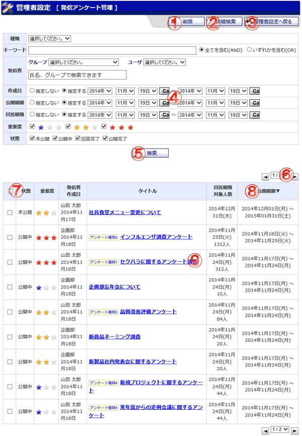

発信アンケート管理画面です。

機能説明
削除ボタン選択した発信アンケートを削除します。 |
詳細検索ボタンクリックすると、詳細検索入力欄を表示します。もう一度クリックすると、入力欄を閉じます。 |
|---|---|
管理者設定へ戻るボタン遷移元の画面へ遷移します。 |
カレンダーボタンカレンダー画面をポップアップで表示します。 |
検索ボタン入力した検索条件で該当アンケートを検索し、一覧に表示します。 |
ページコンボ・前頁・次頁ページコンボで任意のページへ、前頁アイコンクリックで前のページへ、次頁アイコンクリックで次のページへそれぞれ遷移します |
ヘッダチェックボックスチェックをつけると、１ページ分の全てのチェックボックスにチェックが付きます。チェックを外すと、１ページ分の全てのチェックボックスのチェックが外れます。 |
ヘッダタイトルクリックによって一覧のソート条件の切り替えを行います。現在ソート条件になっている項目をもう１度クリックすると「昇順」「降順」が切り替わります。 |
発信アンケート内容発信アンケートの状態、重要度、発信者、作成日、種類名、タイトル、回答期限、対象人数、公開期間を表示します。 |
表示・入力項目説明
種類名
アンケート種類名を選択します。
キーワード
検索するタイトル名を入力します。
検索対象
キーワード検索の範囲を選択します。
グループ
検索するグループを選択します。
ユーザ
検索するユーザーを選択します。選択したグループに所属するユーザーが表示されます。
発信者
検索するグループ・ユーザー名を入力します。
作成日
検索する作成日の期間を選択します。
公開期間
検索する公開期間の期間を選択します。
回答期限
検索する回答期限の期間を選択します。
重要度
検索する重要度を選択します。
状態
検索する状態を選択します。